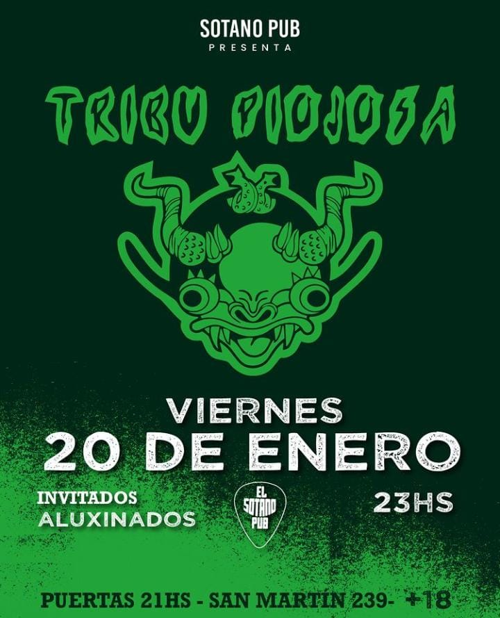

¿te vas a perder este gran espetaculo de los abelardos?
el dia 10 de diciembre a partir de las 21hs
las entradas las podes conseguir en locuras en San Martin 239.

No te pierdas el gran espetaculo de aluxinados, con sus canciones bien rockeras para pasar una noche diferente.
el dia 20 de enero desde 21hs
las entregas las podes conseguir en San Martin 239

no te podes perder este gran atributo a los redondos
el sabado 1 de octubre desde las 00hs
las entradas las podes conseguir en San Mrtin 464

no te podes perder el gran show de dios te salve festejando sus 6 años
se van a presentar el dia 11 de marzo, desde las 21hss en puerta y 23hs en jam
las entradas estan en San Martin 239

encerio te vas a perder esta noche
se van a presentar el dia 8 de julio
las entradas son libres, pero la podes conseguir en Sanmartin 923